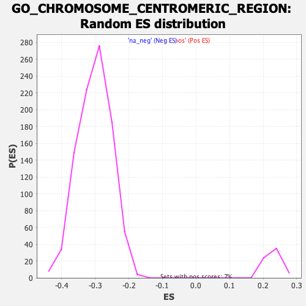

| | | Dataset | DE_genes2 |
| Phenotype | NoPhenotypeAvailable |
| Upregulated in class | na_neg |
| GeneSet | GO_CHROMOSOME_CENTROMERIC_REGION |
| Enrichment Score (ES) | -0.6788967 |
| Normalized Enrichment Score (NES) | -2.247245 |
| Nominal p-value | 0.0 |
| FDR q-value | 0.0 |
| FWER p-Value | 0.0 |
Table: GSEA Results Summary
 Fig 1: Enrichment plot: GO_CHROMOSOME_CENTROMERIC_REGION
Fig 1: Enrichment plot: GO_CHROMOSOME_CENTROMERIC_REGION
Profile of the Running ES Score & Positions of GeneSet Members on the Rank Ordered List
| PROBE | GENE SYMBOL | GENE_TITLE | RANK IN GENE LIST | RANK METRIC SCORE | RUNNING ES | CORE ENRICHMENT | | 1 | DCTN2 | | | 78 | 6.594 | 0.0067 | No |
| 2 | ZNFX1 | | | 271 | 4.568 | 0.0028 | No |
| 3 | MAD1L1 | | | 922 | 2.842 | -0.0320 | No |
| 4 | PSEN1 | | | 1249 | 2.418 | -0.0477 | No |
| 5 | DCTN1 | | | 1311 | 2.346 | -0.0474 | No |
| 6 | DCTN5 | | | 1352 | 2.316 | -0.0458 | No |
| 7 | SUMO3 | | | 1496 | 2.180 | -0.0507 | No |
| 8 | PPP2R1A | | | 1600 | 2.090 | -0.0534 | No |
| 9 | DYNLL1 | | | 1666 | 2.024 | -0.0539 | No |
| 10 | RANGAP1 | | | 1901 | 1.838 | -0.0650 | No |
| 11 | TP53BP1 | | | 2146 | 1.651 | -0.0770 | No |
| 12 | CENPT | | | 2253 | 1.586 | -0.0808 | No |
| 13 | SEC13 | | | 3643 | 0.954 | -0.1640 | No |
| 14 | PHF2 | | | 3740 | 0.916 | -0.1683 | No |
| 15 | DNMT3A | | | 3940 | 0.854 | -0.1790 | No |
| 16 | NDE1 | | | 4008 | 0.835 | -0.1816 | No |
| 17 | CLASP1 | | | 4148 | 0.794 | -0.1888 | No |
| 18 | DCTN3 | | | 4199 | 0.779 | -0.1905 | No |
| 19 | RASSF2 | | | 4390 | 0.722 | -0.2008 | No |
| 20 | KDM4D | | | 4606 | 0.661 | -0.2128 | No |
| 21 | MEAF6 | | | 4612 | 0.659 | -0.2120 | No |
| 22 | HSF1 | | | 4834 | 0.610 | -0.2244 | No |
| 23 | LRWD1 | | | 4983 | 0.574 | -0.2325 | No |
| 24 | AURKC | | | 5270 | 0.499 | -0.2491 | No |
| 25 | PMF1 | | | 5580 | 0.431 | -0.2672 | No |
| 26 | RCC2 | | | 5757 | 0.393 | -0.2773 | No |
| 27 | NDEL1 | | | 5819 | 0.381 | -0.2804 | No |
| 28 | ZNF276 | | | 5964 | 0.353 | -0.2886 | No |
| 29 | DYNC1I1 | | | 6407 | 0.262 | -0.3151 | No |
| 30 | TRAPPC12 | | | 6496 | 0.246 | -0.3201 | No |
| 31 | CEBPB | | | 6545 | 0.234 | -0.3226 | No |
| 32 | DYNC1LI2 | | | 7060 | 0.143 | -0.3538 | No |
| 33 | CENPW | | | 7436 | 0.075 | -0.3766 | No |
| 34 | STAG3 | | | 7725 | 0.029 | -0.3941 | No |
| 35 | REC8 | | | 7773 | 0.021 | -0.3970 | No |
| 36 | CENPB | | | 8197 | -0.041 | -0.4227 | No |
| 37 | PSEN2 | | | 8498 | -0.093 | -0.4409 | No |
| 38 | CENPV | | | 8805 | -0.152 | -0.4594 | No |
| 39 | ZNF207 | | | 8957 | -0.183 | -0.4683 | No |
| 40 | SIN3A | | | 9058 | -0.205 | -0.4740 | No |
| 41 | SS18L1 | | | 9378 | -0.284 | -0.4930 | No |
| 42 | DCTN4 | | | 9595 | -0.338 | -0.5056 | No |
| 43 | UVRAG | | | 9604 | -0.340 | -0.5055 | No |
| 44 | PPP2CB | | | 9632 | -0.347 | -0.5066 | No |
| 45 | SYCP3 | | | 9898 | -0.427 | -0.5220 | No |
| 46 | CSNK1A1 | | | 10302 | -0.555 | -0.5457 | No |
| 47 | SNAI1 | | | 10485 | -0.615 | -0.5558 | No |
| 48 | NUP85 | | | 10541 | -0.640 | -0.5580 | No |
| 49 | NUP98 | | | 10768 | -0.713 | -0.5706 | No |
| 50 | KAT8 | | | 10855 | -0.743 | -0.5746 | No |
| 51 | CFDP1 | | | 11263 | -0.909 | -0.5979 | No |
| 52 | KAT2B | | | 11269 | -0.911 | -0.5966 | No |
| 53 | ANAPC16 | | | 11318 | -0.934 | -0.5979 | No |
| 54 | HIRA | | | 11750 | -1.109 | -0.6223 | No |
| 55 | CBX1 | | | 11777 | -1.119 | -0.6220 | No |
| 56 | PINX1 | | | 11950 | -1.196 | -0.6304 | No |
| 57 | DYNC1LI1 | | | 11956 | -1.198 | -0.6287 | No |
| 58 | PPP2CA | | | 12098 | -1.272 | -0.6351 | No |
| 59 | DCTN6 | | | 12237 | -1.343 | -0.6412 | No |
| 60 | KANSL1 | | | 12510 | -1.477 | -0.6552 | No |
| 61 | CENPL | | | 12686 | -1.583 | -0.6632 | No |
| 62 | DNMT1 | | | 12826 | -1.669 | -0.6688 | No |
| 63 | CTCF | | | 12974 | -1.752 | -0.6747 | No |
| 64 | KIF22 | | | 13043 | -1.792 | -0.6758 | Yes |
| 65 | NSL1 | | | 13055 | -1.802 | -0.6733 | Yes |
| 66 | CENPP | | | 13066 | -1.809 | -0.6708 | Yes |
| 67 | CLIP1 | | | 13072 | -1.812 | -0.6680 | Yes |
| 68 | CENPM | | | 13147 | -1.858 | -0.6693 | Yes |
| 69 | PPP2R5A | | | 13164 | -1.869 | -0.6670 | Yes |
| 70 | BOD1 | | | 13214 | -1.899 | -0.6667 | Yes |
| 71 | SUV39H1 | | | 13225 | -1.906 | -0.6640 | Yes |
| 72 | DYNLT3 | | | 13291 | -1.949 | -0.6646 | Yes |
| 73 | SMC1A | | | 13325 | -1.971 | -0.6632 | Yes |
| 74 | SYCP2L | | | 13346 | -1.986 | -0.6610 | Yes |
| 75 | CENPO | | | 13365 | -2.007 | -0.6586 | Yes |
| 76 | CDT1 | | | 13400 | -2.026 | -0.6572 | Yes |
| 77 | NGDN | | | 13404 | -2.027 | -0.6539 | Yes |
| 78 | NCAPD2 | | | 13788 | -2.321 | -0.6732 | Yes |
| 79 | PPP2R5C | | | 13807 | -2.335 | -0.6703 | Yes |
| 80 | CKAP5 | | | 13831 | -2.355 | -0.6676 | Yes |
| 81 | DSN1 | | | 13907 | -2.424 | -0.6680 | Yes |
| 82 | SUGT1 | | | 13953 | -2.458 | -0.6665 | Yes |
| 83 | INCENP | | | 13962 | -2.468 | -0.6627 | Yes |
| 84 | NEK2 | | | 14051 | -2.552 | -0.6637 | Yes |
| 85 | NUP37 | | | 14072 | -2.573 | -0.6604 | Yes |
| 86 | CLASP2 | | | 14107 | -2.602 | -0.6580 | Yes |
| 87 | PPP1CC | | | 14114 | -2.608 | -0.6538 | Yes |
| 88 | NCAPD3 | | | 14122 | -2.615 | -0.6497 | Yes |
| 89 | NUP43 | | | 14154 | -2.649 | -0.6470 | Yes |
| 90 | KNSTRN | | | 14258 | -2.748 | -0.6486 | Yes |
| 91 | NUP133 | | | 14373 | -2.856 | -0.6506 | Yes |
| 92 | CENPU | | | 14542 | -3.039 | -0.6556 | Yes |
| 93 | PAFAH1B1 | | | 14547 | -3.042 | -0.6506 | Yes |
| 94 | BUB3 | | | 14549 | -3.043 | -0.6453 | Yes |
| 95 | MIS12 | | | 14669 | -3.210 | -0.6471 | Yes |
| 96 | ZW10 | | | 14679 | -3.216 | -0.6420 | Yes |
| 97 | FBXO28 | | | 14681 | -3.219 | -0.6365 | Yes |
| 98 | NUP160 | | | 14887 | -3.486 | -0.6430 | Yes |
| 99 | ZNF330 | | | 14969 | -3.596 | -0.6417 | Yes |
| 100 | NUP107 | | | 15003 | -3.655 | -0.6374 | Yes |
| 101 | BAZ1B | | | 15050 | -3.719 | -0.6338 | Yes |
| 102 | HNRNPU | | | 15058 | -3.735 | -0.6277 | Yes |
| 103 | SPC24 | | | 15084 | -3.765 | -0.6227 | Yes |
| 104 | CENPN | | | 15099 | -3.785 | -0.6170 | Yes |
| 105 | ZWINT | | | 15107 | -3.798 | -0.6109 | Yes |
| 106 | MIS18A | | | 15108 | -3.798 | -0.6043 | Yes |
| 107 | CENPI | | | 15122 | -3.810 | -0.5985 | Yes |
| 108 | SUV39H2 | | | 15132 | -3.824 | -0.5924 | Yes |
| 109 | CDCA8 | | | 15225 | -3.955 | -0.5912 | Yes |
| 110 | ITGB3BP | | | 15248 | -4.001 | -0.5856 | Yes |
| 111 | SEH1L | | | 15275 | -4.073 | -0.5801 | Yes |
| 112 | CHAMP1 | | | 15322 | -4.154 | -0.5757 | Yes |
| 113 | SPAG5 | | | 15339 | -4.181 | -0.5694 | Yes |
| 114 | BOD1L1 | | | 15365 | -4.231 | -0.5636 | Yes |
| 115 | KDM4C | | | 15370 | -4.241 | -0.5565 | Yes |
| 116 | CDCA5 | | | 15393 | -4.273 | -0.5505 | Yes |
| 117 | CBX5 | | | 15439 | -4.369 | -0.5456 | Yes |
| 118 | CBX3 | | | 15520 | -4.527 | -0.5427 | Yes |
| 119 | SKA2 | | | 15559 | -4.611 | -0.5370 | Yes |
| 120 | ZWILCH | | | 15582 | -4.659 | -0.5303 | Yes |
| 121 | ATRX | | | 15599 | -4.719 | -0.5231 | Yes |
| 122 | AURKA | | | 15607 | -4.737 | -0.5153 | Yes |
| 123 | PLK1 | | | 15623 | -4.763 | -0.5080 | Yes |
| 124 | CCNB1 | | | 15643 | -4.796 | -0.5008 | Yes |
| 125 | CENPC | | | 15651 | -4.807 | -0.4929 | Yes |
| 126 | OIP5 | | | 15659 | -4.836 | -0.4849 | Yes |
| 127 | KNTC1 | | | 15665 | -4.846 | -0.4769 | Yes |
| 128 | NUDCD2 | | | 15699 | -4.910 | -0.4704 | Yes |
| 129 | BIRC5 | | | 15741 | -4.998 | -0.4642 | Yes |
| 130 | PDS5B | | | 15754 | -5.018 | -0.4562 | Yes |
| 131 | PDS5A | | | 15889 | -5.372 | -0.4551 | Yes |
| 132 | XPO1 | | | 15911 | -5.423 | -0.4470 | Yes |
| 133 | APC | | | 15912 | -5.426 | -0.4376 | Yes |
| 134 | RAD21 | | | 15930 | -5.459 | -0.4292 | Yes |
| 135 | HELLS | | | 15936 | -5.474 | -0.4200 | Yes |
| 136 | FMR1 | | | 15943 | -5.491 | -0.4108 | Yes |
| 137 | AHCTF1 | | | 15945 | -5.493 | -0.4014 | Yes |
| 138 | TPR | | | 16001 | -5.664 | -0.3949 | Yes |
| 139 | MAD2L1 | | | 16043 | -5.805 | -0.3874 | Yes |
| 140 | GPATCH11 | | | 16050 | -5.815 | -0.3777 | Yes |
| 141 | ORC2 | | | 16058 | -5.843 | -0.3680 | Yes |
| 142 | KIF2C | | | 16061 | -5.848 | -0.3579 | Yes |
| 143 | SKA3 | | | 16116 | -5.989 | -0.3509 | Yes |
| 144 | AURKB | | | 16120 | -6.007 | -0.3406 | Yes |
| 145 | SPC25 | | | 16131 | -6.050 | -0.3308 | Yes |
| 146 | BUB1 | | | 16142 | -6.084 | -0.3208 | Yes |
| 147 | SKA1 | | | 16146 | -6.104 | -0.3104 | Yes |
| 148 | ERCC6L | | | 16159 | -6.148 | -0.3005 | Yes |
| 149 | HJURP | | | 16210 | -6.380 | -0.2925 | Yes |
| 150 | CENPH | | | 16211 | -6.387 | -0.2814 | Yes |
| 151 | CENPQ | | | 16214 | -6.395 | -0.2705 | Yes |
| 152 | SPDL1 | | | 16232 | -6.486 | -0.2603 | Yes |
| 153 | MIS18BP1 | | | 16234 | -6.494 | -0.2491 | Yes |
| 154 | PPP1R12A | | | 16246 | -6.545 | -0.2384 | Yes |
| 155 | BUB1B | | | 16335 | -7.102 | -0.2315 | Yes |
| 156 | ESCO2 | | | 16342 | -7.133 | -0.2195 | Yes |
| 157 | DSCC1 | | | 16359 | -7.253 | -0.2079 | Yes |
| 158 | MTBP | | | 16377 | -7.447 | -0.1960 | Yes |
| 159 | NUF2 | | | 16382 | -7.475 | -0.1833 | Yes |
| 160 | PHF6 | | | 16388 | -7.593 | -0.1704 | Yes |
| 161 | STAG2 | | | 16417 | -7.973 | -0.1583 | Yes |
| 162 | STAG1 | | | 16427 | -8.038 | -0.1449 | Yes |
| 163 | CENPA | | | 16438 | -8.139 | -0.1314 | Yes |
| 164 | TTK | | | 16444 | -8.189 | -0.1176 | Yes |
| 165 | SMC3 | | | 16453 | -8.381 | -0.1035 | Yes |
| 166 | CENPK | | | 16485 | -9.298 | -0.0893 | Yes |
| 167 | KIF18A | | | 16499 | -9.952 | -0.0728 | Yes |
| 168 | CENPE | | | 16501 | -10.010 | -0.0556 | Yes |
| 169 | NCAPG | | | 16504 | -10.079 | -0.0382 | Yes |
| 170 | CENPF | | | 16507 | -10.688 | -0.0198 | Yes |
| 171 | NDC80 | | | 16527 | -12.233 | 0.0002 | Yes |
Table: GSEA details [plain text format]

Fig 2: GO_CHROMOSOME_CENTROMERIC_REGION: Random ES distribution
Gene set null distribution of ES for GO_CHROMOSOME_CENTROMERIC_REGION